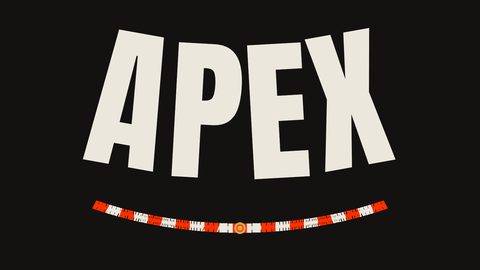
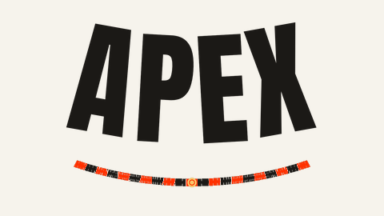

Alle SerienKalender – alle Rennen mit Startzeiten in deutscher Zeit, Wertung und Sender.
Nächstes Rennen
Lusail · 27.–29. November 2026
Für Handy, Google oder Outlook – aktualisiert sich automatisch
Kartengrundlage: Natural Earth (gemeinfrei)
14 Wochenenden · Uhrzeiten = Rennstarts
14 Wochenenden
Vorläufiger Kalender. Startzeiten veröffentlicht die Formel 2 meist erst kurz vor der Saison.
Die Sessionzeiten folgen, sobald der offizielle Zeitplan vorliegt.
Die Sessionzeiten folgen, sobald der offizielle Zeitplan vorliegt.
Die Sessionzeiten folgen, sobald der offizielle Zeitplan vorliegt.
Die Sessionzeiten folgen, sobald der offizielle Zeitplan vorliegt.
Die Sessionzeiten folgen, sobald der offizielle Zeitplan vorliegt.
Die Sessionzeiten folgen, sobald der offizielle Zeitplan vorliegt.
Die Sessionzeiten folgen, sobald der offizielle Zeitplan vorliegt.
Die Sessionzeiten folgen, sobald der offizielle Zeitplan vorliegt.
Die Sessionzeiten folgen, sobald der offizielle Zeitplan vorliegt.
Die Sessionzeiten folgen, sobald der offizielle Zeitplan vorliegt.
Die Sessionzeiten folgen, sobald der offizielle Zeitplan vorliegt.
Die Sessionzeiten folgen, sobald der offizielle Zeitplan vorliegt.
Die Sessionzeiten folgen, sobald der offizielle Zeitplan vorliegt.
Die Sessionzeiten folgen, sobald der offizielle Zeitplan vorliegt.
nach 12 von 14 Wochenenden · Baku, 26.09.2026Stand 2026 · nach 12 von 14 Wochenenden · Baku, 26.09.2026
Saison 2027 noch ohne Wertung
Sky Deutschland zeigt die Formel 2 live auf Sky Sport F1, auch bei WOW.
ServusTV und ORF übertragen die Rennen, meist im Stream (ServusTV On, ORF ON), teils auf ORF SPORT+.
Die Serie nennt für die Schweiz keinen eigenen Sender.
Die Formel 2 ist auch bei F1 TV Pro enthalten — in DACH sind dort aber keine neuen Abos möglich. Geprüft am 28.09.2026.
Letzte Stufe vor der Formel 1 — 22 identische Autos, Sprint und Hauptrennen an jedem Wochenende.
Alle Läufe finden im Rahmenprogramm der Formel 1 statt. Am Freitag gibt es ein freies Training über 45 Minuten und das Qualifying über 30 Minuten. Samstags folgt der Sprint über 120 Kilometer oder höchstens 45 Minuten, am Sonntagvormittag vor dem Grand Prix das Hauptrennen („Feature Race“) über 170 Kilometer oder höchstens 60 Minuten.
Das Qualifying legt die Startaufstellung für das Hauptrennen fest. Für den Sprint werden die ersten zehn des Qualifyings umgedreht: Der Zehnte startet von der Pole, der Schnellste von Platz zehn. So müssen die Schnellsten im Sprint durchs Feld nach vorn.
Im Hauptrennen gibt es 25, 18, 15, 12, 10, 8, 6, 4, 2 und 1 Punkte für die ersten zehn, im Sprint 10, 8, 6, 5, 4, 3, 2 und 1 für die ersten acht. Die Pole für das Hauptrennen bringt zwei Punkte, die schnellste Runde in jedem Rennen einen — aber nur, wenn der Fahrer unter den ersten zehn ins Ziel kommt.
Im Hauptrennen ist ein Boxenstopp mit Wechsel aller vier Reifen Pflicht, und beide Trockenmischungen müssen gefahren werden (außer es kommen Regenreifen zum Einsatz). Pro Wochenende hat jeder Fahrer fünf Sätze Trockenreifen — drei der härteren und zwei der weicheren Mischung — plus drei Sätze Regenreifen.
Alle fahren dasselbe Auto: ein Dallara-Chassis, seit 2024 im Einsatz und nach den Sicherheitsstandards der Formel 1 mit Halo gebaut, dazu ein 3,4-Liter-V6-Turbo von Mecachrome und Einheitsreifen von Pirelli. Das Auto wiegt mit Fahrer 795 Kilogramm, erreicht bis zu 335 km/h und hat keine Servolenkung. Unterschiede machen Fahrer, Abstimmung und Team.
Alle Formel-2-Sessions erscheinen in deinem Kalender und aktualisieren sich automatisch, wenn sich Startzeiten ändern.
iPhone / Apple Kalender öffnet den Kalender Google Kalender im Browser Outlook im BrowserSchon verbunden? Für den Wechsel den bisherigen APEX-Kalender in der Kalender-App entfernen, sonst stehen Termine doppelt.
Nächstes Rennen
Yas Marina · 4.–6. Dezember 2026
Nächstes Rennen
Yas Marina · 10.–12. Dezember 2027
Nächstes Rennen
Neue Termine folgen, sobald der Kalender veröffentlicht ist. Wer die Termine mit dem eigenen Kalender verbindet, bekommt sie automatisch, sobald sie feststehen.